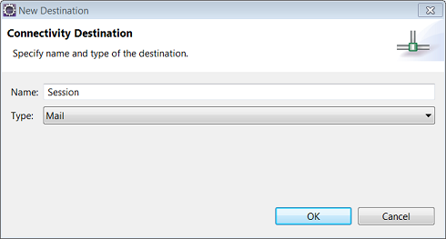
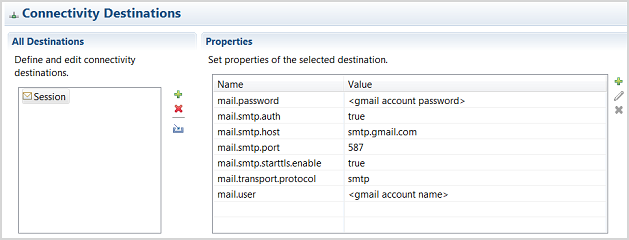

Tutorial: Sending E-Mails
This step-by-step tutorial shows how you can send an e-mail from a simple Web application using an e-mail provider that is accessible on the Internet. As an example, it uses Gmail.
| Steps | Sample Application |
|---|---|
| Prerequisites |
The application is also available as a sample in the SAP Cloud Platform SDK: Sample name: mail Location: <sdk>/samples folder More information: Samples |
| 1. Create a Dynamic Web Project and Servlet | |
| 2. Extend the Servlet | |
| 3. Test the Application Locally | |
| 4. Test the Application in the Cloud |
You have installed the SAP Cloud Platform Tools and created a SAP HANA Cloud server runtime environment as described in Setting Up the Development Environment.
To develop applications for the SAP Cloud Platform, you require a dynamic Web project and servlet.
- From the Eclipse main menu, choose
 File
File  New Dynamic Web Project
New Dynamic Web Project  .
. - In the Project name field, enter mail.
- In the Target Runtime pane, select the runtime you want to use to deploy the application. In this tutorial, you use Java Web.
- In the Configuration area, leave the default configuration and choose Finish.
- To add a servlet to the project you have just created, select the mail node in the Project Explorer view.
- From the Eclipse main menu, choose File New Servlet .
- Enter the Java package com.sap.cloud.sample.mail and the class name MailServlet.
- Choose Finish to generate the servlet.
- doGet(): Creates an HTML form for entering e-mail details.
- doPost(): Uses the mail session resource to create and send a MimeMessage object. It confirms that an e-mail has been sent.
- In the Project Explorer view, expand the mail/Java Resources/src/com.sap.cloud.sample.mail node.
- Select MailServlet.java, and from the context menu choose Open With Java Editor .
- In the opened editor, replace the entire servlet class with the following content:
package com.sap.cloud.sample.mail; import java.io.IOException; import java.io.PrintWriter; import javax.annotation.Resource; import javax.mail.Message.RecipientType; import javax.mail.MessagingException; import javax.mail.Session; import javax.mail.Transport; import javax.mail.internet.InternetAddress; import javax.mail.internet.MimeBodyPart; import javax.mail.internet.MimeMessage; import javax.mail.internet.MimeMultipart; import javax.servlet.ServletException; import javax.servlet.http.HttpServlet; import javax.servlet.http.HttpServletRequest; import javax.servlet.http.HttpServletResponse; import org.slf4j.Logger; import org.slf4j.LoggerFactory; /** * Servlet implementing a mail example which shows how to use the connectivity service APIs to send e-mail. * The example provides a simple UI to compose an e-mail message and send it. The post method uses * the connectivity service and the javax.mail API to send the e-mail. */ public class MailServlet extends HttpServlet { @Resource(name = "mail/Session") private Session mailSession; private static final long serialVersionUID = 1L; private static final Logger LOGGER = LoggerFactory.getLogger(MailServlet.class); /** {@inheritDoc} */ @Override protected void doGet(HttpServletRequest request, HttpServletResponse response) throws ServletException, IOException { // Show input form to user response.setHeader("Content-Type", "text/html"); PrintWriter writer = response.getWriter(); writer.write("<!DOCTYPE HTML PUBLIC \"-//W3C//DTD HTML 4.01 Transitional//EN\" " + "\"http://www.w3.org/TR/html4/loose.dtd\">"); writer.write("<html><head><title>Mail Test</title></head><body>"); writer.write("<form action='' method='post'>"); writer.write("<table style='width: 100%'>"); writer.write("<tr>"); writer.write("<td width='100px'><label>From:</label></td>"); writer.write("<td><input type='text' size='50' value='' name='fromaddress'></td>"); writer.write("</tr>"); writer.write("<tr>"); writer.write("<td><label>To:</label></td>"); writer.write("<td><input type='text' size='50' value='' name='toaddress'></td>"); writer.write("</tr>"); writer.write("<tr>"); writer.write("<td><label>Subject:</label></td>"); writer.write("<td><textarea rows='1' cols='100' name='subjecttext'>Subject</textarea></td>"); writer.write("</tr>"); writer.write("<tr>"); writer.write("<td><label>Mail:</label></td>"); writer.write("<td><textarea rows='7' cols='100' name='mailtext'>Mail Text</textarea></td>"); writer.write("</tr>"); writer.write("<tr>"); writer.write("<tr>"); writer.write("<td><input type='submit' value='Send Mail'></td>"); writer.write("</tr>"); writer.write("</table>"); writer.write("</form>"); writer.write("</body></html>"); } /** {@inheritDoc} */ @Override protected void doPost(HttpServletRequest request, HttpServletResponse response) throws ServletException, IOException { Transport transport = null; try { // Parse form parameters String from = request.getParameter("fromaddress"); String to = request.getParameter("toaddress"); String subjectText = request.getParameter("subjecttext"); String mailText = request.getParameter("mailtext"); if (from.isEmpty() || to.isEmpty()) { throw new RuntimeException("Form parameters From and To may not be empty!"); } // Construct message from parameters MimeMessage mimeMessage = new MimeMessage(mailSession); InternetAddress[] fromAddress = InternetAddress.parse(from); InternetAddress[] toAddresses = InternetAddress.parse(to); mimeMessage.setFrom(fromAddress[0]); mimeMessage.setRecipients(RecipientType.TO, toAddresses); mimeMessage.setSubject(subjectText, "UTF-8"); MimeMultipart multiPart = new MimeMultipart("alternative"); MimeBodyPart part = new MimeBodyPart(); part.setText(mailText, "utf-8", "plain"); multiPart.addBodyPart(part); mimeMessage.setContent(multiPart); // Send mail transport = mailSession.getTransport(); transport.connect(); transport.sendMessage(mimeMessage, mimeMessage.getAllRecipients()); // Confirm mail sending response.getWriter().println( "E-mail was sent (in local scenario stored in '<local-server>/work/mailservice'" + " - in cloud scenario using configured mail session)."); } catch (Exception e) { LOGGER.error("Mail operation failed", e); throw new ServletException(e); } finally { // Close transport layer if (transport != null) { try { transport.close(); } catch (MessagingException e) { throw new ServletException(e); } } } } }
- Save the class.
Test your code using the local file system before configuring your mail destination and testing the application in the cloud.
- To test your application on the local server, select the servlet and choose Run Run As Run on Server .
- Make sure that the Manually define a new server radio button is
selected and select SAP Java Web Server .
- Choose Finish. A sender screen appears, allowing you to compose and send an e-mail. The sent e-mail is stored in the work/mailservice directory contained in the root of your SAP Cloud Platform local runtime server.
Create a mail destination that contains the SMTP settings of your e-mail provider. The name of the mail destination must match the name used in the resource reference in the web.xml descriptor.
- In the Eclipse main menu, choose File New Other Server Server .
- Select the server type SAP Cloud Platform and choose Next.
- In the SAP Cloud Platform Application dialog box, enter the name of your application, account, user, and password and choose Finish. The new server is listed in the Servers view.
- Double-click the server and switch to the Connectivity tab.
- In the All Destinations section, choose the
 New Destination button.
New Destination button. - In the New Destination dialog box, enter the name
Session and type Mail and
choose OK.

- Configure the destination by adding the properties for port 587
(SMTP+STARTTLS) or 465 (SMTPS). To do this, choose the Add
Property button in the Properties
section:
- To use port 587 (SMTP+STARTTLS), add the following properties:
Property Value mail.transport.protocol smtp mail.smtp.host smtp.gmail.com mail.smtp.auth true mail.smtp.starttls.enable true mail.smtp.port 587 mail.user <gmail account name> mail.password <gmail account password> The configured destination for port 587 is shown below:

- For port 465 (SMTPS), use the following properties:
Property Value mail.transport.protocol smtps mail.smtps.host smtp.gmail.com mail.smtps.auth true mail.smtps.port 465 mail.user <gmail account name> mail.password <gmail account password>
- To use port 587 (SMTP+STARTTLS), add the following properties:
- Save the destination to upload it to the cloud. The settings take effect when the application is next started.
- In the Project Explorer view, select
MailServlet.java and choose Run Run As Run on Server .
- Make sure that the Choose an existing server radio button is selected and select the server you have just defined.
- Choose Finish to deploy to the cloud. You should now see the sender screen, where you can compose and send an e-mail